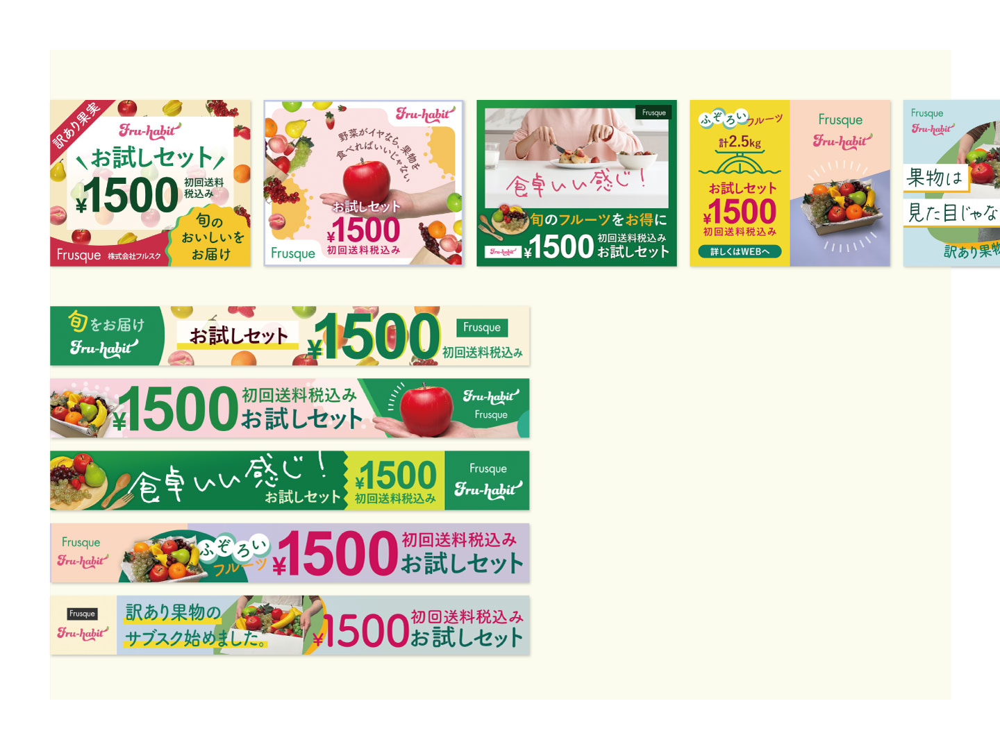

【課題制作】果物サブスクサービスの広告バナー制作

スタートアップ企業「株式会社フルスク」の新サービス「フルハビ（国内の規格外フルーツのサブスク）」PRバナー。食品ロスを減らし、消費者にフルーツを食べる習慣をつけてほしい、という思いがある。今回の広告でお試し会員への登録3000人達成（1ヶ月）を目標としている。
目的
サービスの認知／会員登録への誘導
ターゲット
25〜30歳／女性
デザインコンセプト
食品を扱うサービスのため、安全・新鮮が伝わることを意識。新商品のため、まずは「フルーツのサブスク」であることを認識してもらえるよう、視認性の高いデザインにした。
担当
企画／撮影／デザイン
期間
| コンセプト（ラフ案） | ：8時間 |
|---|---|
| スチール撮影 | ：5時間 |
| 画像加工／デザイン（5案） | ：10時間 |